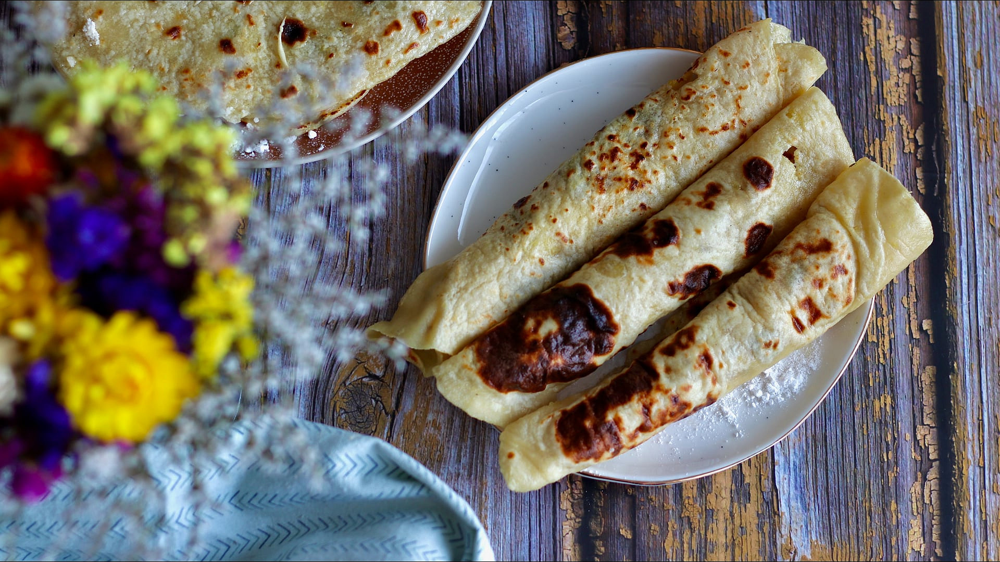

Potato flatbread
- 450 g potatoes boiled
- 130g flour
- 1 potato
- pinch of salt
- 1/2 teaspoon salt
- butter
- duck fat livre
- cabbage
- garlic
Ingredients

An indispensable part of the Slovak kitchen are lokshe (lokše, lokša singular). They are thin pancakes made out of potato dough that are baked on a hot plate or an ungreased frying pan. They are kind of like Slovak tortillas. These will be found on any Christmas table! You will also find them offered at Christmas markets held in just about every town during the holidays. Today I am again at my grandma, so I watched as she prepared a batch. Follow the following easy steps to prepare this delicious and cheap Slovak treat at home.